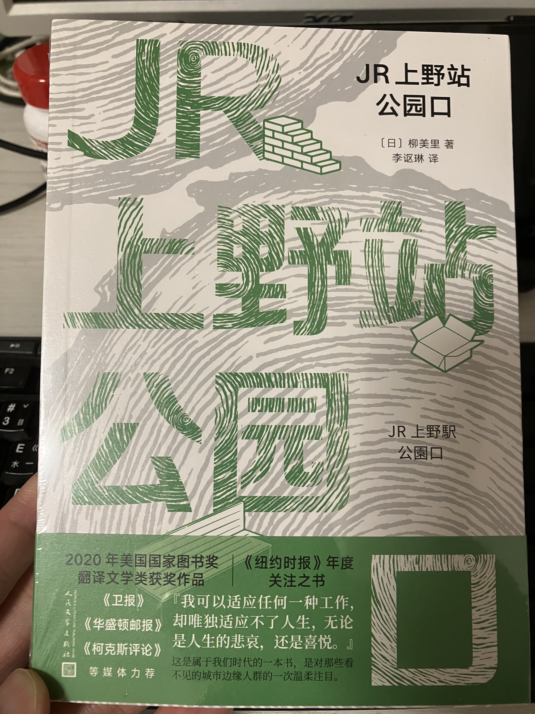

柳美里-『JR上野駅公園口』

柳美里-在知道這本書之前，我對於韓國作家或是韓國有關的文學，大抵就是描述從北韓逃離到中國，輾轉逃到南韓的脫北者的故事。或是在描寫在日本殖民朝鮮期間，一群為了要生存下去的朝鮮人，離鄉背井來到日本，雖然語言不通，雖然備受歧視，但是他們終究在這樣的逆境中，在日本生存下來，進而認同日本這個國家。柳美里是韓裔日本人，也是具有相同的背景，再加上無意間看到了這一本JR上野駅公園口，使我心生好奇，於是我就在博客來網站訂購了這本書。
原本我期待這一本書會是類似，日劇池袋西口公園的劇情，要在種種蛛絲馬跡下，找到真正的犯人。但是這本書雖然也是以公園為主題，但是卻是描寫流浪漢的生活，這也是一個相當有趣的題材。到底作者會如何描寫流浪漢的生活？到底是要遭遇到什麼樣的挫折，才會讓人拋棄一切，寧可選擇生活在公園裡，以拾荒的方式維持生計？我真的很佩服作者可以去細膩的描寫流浪漢在公園裡的生活，是要如何與公園中的各種族群共存，面對警察搜山的時候，又該如何應變，如何自處？
但是話說回來，每一個人變成流浪漢的原因或是理由都不盡相同，但是絕非是一成不變的從富有到貧窮落魄，最後只好流落街頭的劇本。書中的主角就是一個原本是來東京打零工，賺取金錢來供應自己鄉下的家庭所需，結果沒想到他的兒子還沒讀完大學就意外過世，妻子也在不久之後在睡夢中過世，人生遭逢這樣的打擊，但又沒有勇氣結束自己的生命，只好流落街頭（公園）放逐自己。
或許流浪漢在一個城市中是一個討厭的存在，不管政府單位或是一般人民，都會投以厭惡的眼光。但是如果在了解他們的故事之後，是否會不會比較同理選擇流浪的人的心理呢?雖然流浪者需要在這樣的眼光下生存，但是他們已經習慣(或是說不在乎)旁人的眼光，他們更在乎的是自己到底能不能被自己接納，自己的痛苦能不能被理解，還是只能向同為流浪者的人訴苦?主角最終在一次警察搜山的行動中，拖著生病的身體，從上野出發回到老家。回到老家時，卻發現海嘯正來襲，而她的孫女正好開車時遇上海嘯，沒能躲過這次的劫難。
這本書充滿著悲傷的基調，柳美里擅長把自己的隱私寫成小說，把她不幸及悲慘的遭遇訴諸文字。這次他也選擇以文字的方式，以這本書來紀念311受災的人們。
延伸閱讀:
漫遊者文化-少年來了（韓江）另外，美國購物代運可參考:
https://a1253247.blogspot.com/p/hopshopgo-vs-spexeshop.html
對板球有興趣的可參考:
https://a1253247.blogspot.com/2022/05/cricket-line-written-by-admin-24-10.html
對生活飲食有興趣，可參考: